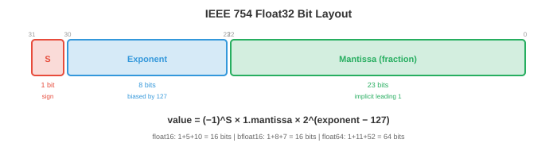
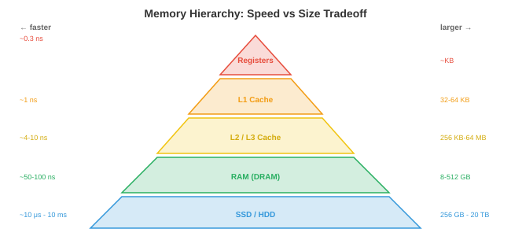

计算机体系结构¶
计算机体系结构研究如何构建能执行指令的机器。本文涵盖数制系统、logic gate、CPU 设计、指令集架构、pipeline、memory 层次结构和 virtual memory——这是所有程序、框架和 AI 模型最终运行所依赖的硬件基础。
- 每一个神经网络、每一个训练循环、每一次推理调用，最终都变成在晶体管中流动的一系列电信号。对于认真的 ML 从业者来说，理解硬件并非可选项：它能解释为何矩阵乘法速度快、为何 memory 是瓶颈、为何 GPU 主导 AI 训练，以及为何对 cache 友好的代码比朴素代码快 100 倍。
数制系统¶
-
计算机用 binary（二进制，基数 2）表示一切：由 0 和 1 组成的序列。每一位称为 bit，8 个 bit 构成一个 byte。binary 数 \(b_{n-1} b_{n-2} \ldots b_1 b_0\) 的值为 \(\sum_{i=0}^{n-1} b_i \cdot 2^i\)。
-
例如，\(1011_2 = 1 \cdot 8 + 0 \cdot 4 + 1 \cdot 2 + 1 \cdot 1 = 11_{10}\)。
-
Hexadecimal（十六进制，基数 16）是 binary 的紧凑表示法。每个十六进制位代表 4 个 bit：\(0\text{-}9\) 对应 \(0000\text{-}1001\)，\(A\text{-}F\) 对应 \(1010\text{-}1111\)。因此 \(\text{0xFF} = 1111\,1111_2 = 255_{10}\)。内存地址和颜色代码通常用十六进制表示。
-
Two's complement（补码）用于表示有符号整数。对于 \(n\) 位数，最高有效位的权重为 \(-2^{n-1}\) 而不是 \(+2^{n-1}\)。8 位补码的范围是 \(-128\) 到 \(+127\)。取反方法：翻转所有位再加 1。这种表示方式使加减法可以共用同一硬件电路，因此被普遍采用。
-
IEEE 754 浮点数将实数表示为 \((-1)^s \times 1.m \times 2^{e-\text{bias}}\)，其中 \(s\) 是符号位，\(m\) 是尾数（小数部分），\(e\) 是偏置指数。

- **float32**（单精度）：1 位符号 + 8 位指数 + 23 位尾数 = 32 位。范围：$\approx \pm 3.4 \times 10^{38}$，精度：$\approx 7$ 位十进制数字。
- **float64**（双精度）：1 位符号 + 11 位指数 + 52 位尾数 = 64 位。范围：$\approx \pm 1.8 \times 10^{308}$，精度：$\approx 15$ 位十进制数字。
- **float16**（半精度）：1 + 5 + 10 = 16 位。范围和精度有限，但内存和带宽占用减半。广泛用于 ML 训练（混合精度，第 6 章）。
- **bfloat16**：1 + 8 + 7 = 16 位。指数范围与 float32 相同，但精度更低。由 Google 专为 ML 设计：完整的指数范围防止训练时溢出，而精度降低对梯度更新是可接受的。
- 浮点运算并不精确。在 float64 中 \(0.1 + 0.2 \neq 0.3\)（结果为 \(0.30000000000000004\)）。这是因为 \(0.1\) 没有精确的 binary 表示，正如 \(1/3\) 没有精确的十进制表示一样。在数百万次运算中累积这些误差（如梯度下降）可能导致数值不稳定，这就是为什么存在 loss scaling（第 6 章）和 Kahan 求和等技术。
Logic Gate¶
-
所有计算都归结为 logic gate：实现布尔运算的物理电路（即文件 1 中的命题逻辑）。
-
基本 gate：
- AND：仅当两个输入都为 1 时输出 1。
- OR：至少一个输入为 1 时输出 1。
- NOT（反相器）：翻转输入。
- NAND（NOT-AND）：通用 gate。任何其他 gate 都可以仅用 NAND gate 构建，这就是 NAND 成为数字电路基本构件的原因。
- XOR（异或）：输入不同时输出 1。对于加法（binary 加法的和位就是 XOR）和密码学至关重要。
-
半加器用 XOR（和）和 AND（进位）将两个单 bit 相加。全加器将两个 bit 加上进位输入，通过级联构成 \(n\) 位加法器。这就是 CPU 执行整数加法的方式：一系列简单的 logic gate 的级联。
-
多路选择器（MUX）根据控制信号从多个输入中选择一个。有 \(n\) 个控制位时，可从 \(2^n\) 个输入中选择。多路选择器是 if-else 链的硬件等价物，在 CPU 数据通路中被广泛用于路由数据。
-
现代处理器包含数十亿个晶体管，每个都像一个微小的开关。晶体管要么导通（代表 1），要么截止（代表 0）。gate 由晶体管构成，加法器由 gate 构成，ALU 由加法器构成，CPU 由 ALU 构成。整个计算层次结构都建立在这一基础之上。
CPU 架构¶
-
中央处理器（CPU）执行指令。其核心组件：
-
ALU（算术逻辑单元）：执行整数算术（加、减、乘）和逻辑运算（AND、OR、XOR、移位）。实际计算在此发生，由上述 logic gate 构建而成。
-
Register：CPU 内部的微小超高速存储位置。现代 CPU 有数十个通用 register，每个存储一个字（64 位 CPU 上为 64 位）。Register 是系统中最快的存储：访问仅需约 0.3 纳秒。
-
程序计数器（PC）：保存下一条要执行的指令的内存地址。
-
控制单元：解码指令并协调数据通路，告知 ALU 执行哪种运算以及使用哪些 register。
-
-
指令周期（取指-译码-执行）每秒重复数十亿次：
- 取指：从 PC 所指的内存地址读取指令。
- 译码：确定指令的功能（加法？从内存加载？分支？）及其使用的操作数。
- 执行：执行操作（ALU 计算、内存访问或分支）。
- 递增 PC（除非指令是分支/跳转）。
-
运行在 4 GHz 的 CPU 每秒执行 40 亿个周期。每个周期耗时 0.25 纳秒。在这段时间内，光大约传播 7.5 厘米，这就是为什么芯片的物理尺寸至关重要：信号无法在一个周期内穿越一块大芯片。
指令集架构¶
-
指令集架构（ISA）是硬件与软件之间的契约：定义 CPU 所理解的指令、register 集合、内存模型和编码格式。
-
CISC（复杂指令集计算机）：指令可以是复杂的、可变长度的，并且可以直接访问内存。单条指令可能将两个内存值相乘并将结果存储。x86（Intel/AMD）是最主流的 CISC ISA，为大多数台式机和服务器提供动力。其向后兼容性（现代 x86 CPU 仍能运行 1980 年代的代码）既是其优势，也是其负担。
-
RISC（精简指令集计算机）：指令简单、固定长度，仅对 register 进行操作。内存访问需要单独的 load/store 指令。更简单的指令可实现更高的时钟频率和更容易的 pipeline。
- ARM：移动设备最主流的 RISC ISA，在服务器和笔记本电脑上的使用也日益增多（Apple M 系列芯片就是 ARM）。ARM 的功耗效率使其非常适合电池供电和热量受限的设备。
- RISC-V：开源 RISC ISA。任何人都可以设计 RISC-V 芯片，无需支付许可费。在嵌入式系统、研究和 AI 加速器领域的应用日益增长。
-
CISC 与 RISC 的区别已经模糊：现代 x86 CPU 在内部将复杂的 CISC 指令解码为更简单的微操作（本质上是内部使用 RISC），从而兼顾了两者的优势。
Pipeline¶
- 没有 pipeline 时，CPU 在开始下一条指令之前会完整地执行完当前指令。这浪费了硬件资源：当 ALU 在执行时，取指和译码单元处于空闲状态。

-
Pipeline（流水线）像装配线一样重叠执行指令。当指令 1 在执行时，指令 2 在译码，指令 3 在取指。5 级 pipeline（取指、译码、执行、访存、写回）可以同时运行 5 条指令。
-
吞吐量接近每周期一条指令（即使每条指令需要 5 个周期才能完成）。这与 ML 中的 pipeline 原理相同：数据并行将计算与通信重叠（第 6 章）。
-
冒险（Hazard）是使 pipeline 中断的情况：
-
数据冒险：指令 2 需要指令 1 尚未产生的结果。"Add R1, R2, R3" 后跟 "Sub R4, R1, R5"——第二条指令需要 R1，而第一条指令仍在计算。转发（旁路）通过将结果直接从一个 pipeline 阶段路由到另一个阶段来解决此问题，无需等待写回阶段。
-
控制冒险：分支指令（if-else）意味着 CPU 在分支解析完成之前不知道下一条要取的指令。分支预测猜测分支走向，并沿预测路径推测性地取指。现代预测器的准确率超过 95%，使用历史表和类似神经网络的模式匹配。预测错误会浪费约 15 个周期（pipeline 必须被清空并重新启动）。
-
结构冒险：两条指令同时需要同一硬件资源（例如，两者都需要内存端口）。通过复制资源或插入停顿来解决。
-
Memory 层次结构¶
- 计算机存储的基本矛盾：快速的 memory 价格昂贵且容量小，廉价的 memory 速度慢但容量大。Memory 层次结构通过利用局部性来弥合这一差距：程序倾向于反复访问相同的数据（时间局部性）并访问相邻的数据（空间局部性）。

-
从最快到最慢的层次结构：
- Register：访问约 0.3 纳秒，总容量约 KB。位于 CPU 内部。
- L1 cache：约 1 纳秒，每核 32-64 KB。分为指令 cache 和数据 cache。
- L2 cache：约 4 纳秒，每核 256 KB-1 MB。
- L3 cache：约 10 纳秒，各核共享 8-64 MB。
- RAM（DRAM）：约 50-100 纳秒，8-512 GB。主存。
- SSD：约 10-100 微秒，256 GB-8 TB。持久性存储。
- HDD：约 5-10 毫秒，1-20 TB。机械存储，随机访问非常慢。
-
Register 与 RAM 之间的速度差距约为 300 倍。Register 与磁盘之间则约为 3000 万倍。Cache 层次结构弥补了这一差距：如果 CPU 所需的数据在 L1 cache 中（cache 命中），访问速度很快；否则（cache 未命中），CPU 会停顿，等待从较慢的层级获取数据。
-
Cache 关联性决定了内存地址可以存储在 cache 的哪个位置：
- 直接映射：每个地址只能映射到一个固定的 cache 行。简单但会导致冲突。
- 全关联：任何地址都可以存储在任意位置。灵活但搜索代价高。
- 组关联（\(k\) 路）：每个地址映射到包含 \(k\) 个位置的组中。这是实际 CPU 中使用的实用折中方案（通常为 4 路或 8 路）。
-
Cache 一致性确保所有 CPU 核心看到一致的内存视图。当核心 1 写入核心 2 已缓存的地址时，一致性协议（如 MESI）会使核心 2 的副本失效或更新。这对并发编程（文件 4）至关重要，也是共享内存并行编程困难的原因之一。
-
对于 ML 从业者，memory 层次结构解释了为什么：
- 矩阵运算应顺序访问内存（行主序与列主序的布局很重要）。
- Batch size 影响性能：更大的 batch 能分摊内存延迟。
- 混合精度（float16/bfloat16）使有效内存带宽翻倍，而带宽通常是瓶颈所在。
Virtual Memory¶
-
Virtual memory 为每个 process 提供拥有自己的大型连续内存空间的假象，即使物理 RAM 有限且被多个 process 共享。
-
地址空间被划分为固定大小的 page（通常为 4 KB）。Page table 将虚拟 page 编号映射到物理帧编号。当程序访问虚拟地址 0x1234 时，CPU 通过查找 page table 将其转换为物理地址。
-
TLB（Translation Lookaside Buffer）是 page table 条目的 cache。由于 page table 存储在 RAM 中（速度慢），TLB 在快速硬件中存储最近使用的转换。TLB 未命中需要遍历内存中的 page table，耗费数百个周期。
-
当程序访问不在物理 RAM 中的 page 时，会发生 page fault。OS 从磁盘加载该 page（换入），这需要数百万个周期。过多的 page fault（thrashing）会严重降低性能。这就是为什么 ML 训练需要足够的 RAM 来容纳模型、优化器状态和合理的数据 batch。
-
Page 置换算法决定 RAM 满时驱逐哪个 page：
- LRU（最近最少使用）：驱逐最长时间未被访问的 page。对大多数工作负载来说实践中表现最优。在硬件中用 clock 算法近似实现（带有参考位的循环链表）。
- FIFO：驱逐最旧的 page。简单但可能驱逐频繁使用的 page。
- 最优（Bélády 算法）：驱逐最长时间内不会被使用的 page。无法实现（需要未来知识），但可用作理论基准。
-
Virtual memory 还提供隔离：每个 process 都有自己的虚拟地址空间。一个 process 中的 bug 无法破坏另一个 process 的内存，因为它们的虚拟地址映射到不同的物理帧。这是 OS 安全性和稳定性的基础。
I/O、Interrupt 和 DMA¶
-
CPU 需要与外部世界通信：磁盘、网卡、键盘、GPU。这就是 I/O 子系统。
-
程序 I/O（轮询）：CPU 在循环中反复检查设备的状态 register，等待数据就绪。简单但会浪费 CPU 周期做空转而不是执行有用工作。
-
Interrupt 驱动的 I/O：当数据就绪时，设备发送硬件 interrupt。CPU 继续正常执行，直到 interrupt 到来，然后运行 interrupt handler（内核函数）来处理数据。这比轮询效率高得多，因为 CPU 在等待时不会空闲。
-
Interrupt 机制：
- 设备通过硬件线路发送 interrupt 信号。
- CPU 完成当前指令，将当前状态（register、program counter）保存到 stack 上。
- CPU 在 interrupt 向量表（每种 interrupt 类型一个函数指针的表）中查找 interrupt handler 地址。
- Handler 在内核模式下运行，处理 I/O 并返回。
- CPU 恢复保存的状态，继续执行被中断的程序。
-
这与 context switch（文件 3）相同的保存/恢复模式，但由硬件而非计时器触发。
-
DMA（直接内存访问）：对于大数据传输（磁盘读取、网络数据包、GPU 内存拷贝），让 CPU 逐字节复制数据是浪费的。DMA controller 在不涉及 CPU 的情况下直接在设备和 RAM 之间传输数据。CPU 设置传输参数（源、目标、大小），DMA controller 处理传输，完成后 CPU 收到 interrupt。
-
DMA 对 ML 至关重要：当你调用
model.to('cuda')时，数据通过 PCIe 总线经由 DMA 从系统 RAM 传输到 GPU memory。在训练期间，跨 GPU 的梯度同步使用基于 DMA 的 RDMA（远程 DMA）进行高带宽、低延迟传输（第 6 章）。 -
总线连接 CPU 与内存和 I/O 设备。现代系统使用 PCIe（高速外设组件互联）连接高速设备（GPU、NVMe SSD、网卡）。PCIe 4.0 每 x16 插槽提供约 32 GB/s；PCIe 5.0 使其翻倍。总线带宽通常是 GPU 训练的瓶颈：GPU 的计算速度可能超过数据供给速度。
-
MMIO（内存映射 I/O）：设备 register 被映射到内存地址。CPU 使用普通的 load/store 指令读写这些地址，硬件将访问路由到设备而不是 RAM。这将内存和 I/O 访问统一为单一机制，简化了硬件和软件。
编程任务（使用 CoLab 或 notebook）¶
-
探索 IEEE 754 浮点数表示。将浮点数转换为其 binary 表示，并观察符号位、指数位和尾数位。
import struct def float_to_bits(f): """显示 float32 的 IEEE 754 binary 表示。""" packed = struct.pack('>f', f) bits = ''.join(f'{byte:08b}' for byte in packed) sign = bits[0] exponent = bits[1:9] mantissa = bits[9:] return sign, exponent, mantissa for val in [1.0, -1.0, 0.1, 0.5, 3.14, float('inf'), float('nan')]: s, e, m = float_to_bits(val) print(f"{val:>10} sign={s} exp={e} ({int(e, 2) - 127:>4d}) mantissa={m[:10]}...") -
模拟直接映射 cache。追踪一系列内存访问的命中和未命中情况。
def simulate_cache(accesses, cache_size=8, block_size=1): """模拟直接映射 cache。""" cache = [None] * cache_size hits, misses = 0, 0 for addr in accesses: cache_line = addr % cache_size if cache[cache_line] == addr: hits += 1 status = "HIT " else: misses += 1 cache[cache_line] = addr status = "MISS" print(f" 访问 {addr:3d} → 行 {cache_line}: {status}") print(f"\n命中：{hits}，未命中：{misses}，命中率：{hits/(hits+misses):.1%}") # 顺序访问（良好的局部性） print("顺序访问：") simulate_cache([0, 1, 2, 3, 4, 5, 6, 7, 0, 1, 2, 3]) # 跨步访问（冲突未命中） print("\n跨步访问（步长 = cache 大小）：") simulate_cache([0, 8, 0, 8, 0, 8]) -
演示浮点运算不满足结合律。展示 \((a + b) + c \neq a + (b + c)\) 的情况。
import jax.numpy as jnp a = jnp.float32(1e8) b = jnp.float32(1.0) c = jnp.float32(-1e8) left = (a + b) + c # (1e8 + 1) + (-1e8) right = a + (b + c) # 1e8 + (1 + (-1e8)) print(f"(a + b) + c = {left}") # 应该是 1.0 print(f"a + (b + c) = {right}") # 可能丢失 1.0 print(f"相等：{left == right}") print(f"\n当 1.0 与 1e8 相加时会丢失，因为 float32 只有约 7 位十进制精度")